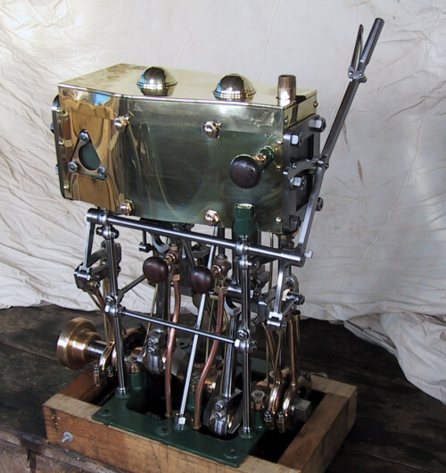

2008 Week 9 in Review
February 24 to March 1, 2008
An Update from the Sobre las Olas
This week started with a great call from the guys from the Sobre las Olas. Owners Sean and Jeff and engineer John were all very excited to tell me about how they ran the engines for the first time without my help. I am very excited to hear about this boat coming back to life. It's a long way from where it was about four years ago. Sean and Jeff have put a lot of work into the boat - and twice as much worry.
I had met Sean and Jeff a few times while working with Dan, and heard about the repair estimates for the engine overhaul, but I first talked with Sean about four years ago when a rumor swept the very tight old engine community about how the owners were considering replacing the original Atlas-Imperial engines. Apparently, the sticker shock of Dan's proposed $300,000 overhaul made Caterpillars look really good.
When I heard that, I called Sean immediately. He was blown over by my rant on the importance of preserving treasures like the Sobre intact, since just a few days earlier he'd talked with the San Diego Maritime Museum about donating the engines. He couldn't believe how important it was to the old engine guys that the engines stay with the boat, and was amazed by how they all immediately got on the Red Phone and to sound the alarm. I had a feeling that I was not the first to talk him out of pulling out the Atlas-Imperials.
I also wrote a very convincing email to Sean on how to own two heavy-duties with less fear. The conversation, the clamor, or the email must have worked, as I have been flying down to Los Angeles regularly to repair and maintain the Sobre's engines ever since.
The Sobre is a huge project that has the potential to go completely out of control at any moment, but the guys are doing a great job in my opinion. They take a few big steps then rein it all in and take small steps for a while, but they never let the health of the boat go backwards. That's the way to do it: slow and steady, just like these old heavy-duties. I hope to see Sean and Jeff cruising soon in their treasure of a classic yacht.
Another update from John in Maryland
Early this week I had another conversation with John in Maryland. He is really excited that other people care about these old engines. He also wanted to brief me on the condition of a light ship he is volunteering on and how maintenance is often neglected. It's a common story in the non-profit and museum world of historic ships - many people don't realize that these boats were decommissioned or retired when they ceased being cost-effective to maintain. Museums and non-profits need to realize that if the government or a business can't afford the ship any more, then they may have an even harder time maintaining it. Keeping an old ship as a museum vessel is possible, but you have to know what you're getting into and have a plan for how to keep it going beyond "but people love her!"
And back to the Maris Pearl
On board the Maris Pearl, we removed the old heat exchanger and lowered in the re-tubed heat exchanger. I also cleaned the bilge really well and painted the port side bilge with two coats of epoxy paint. The end is almost in sight.
Old Tacoma Brokerage?
We also had a visitor looking for an old tug powered a heavy-duty to use as a live-aboard. This is the third call I have had for a tug in the last two months. I think OTM might want an classified advertising portion of the website, but until then, all you tug boat owners who are looking to pass the boat on can email me at adrian@oldtacomamarine.com. I will try to play match-maker.
OTM Inc also had to do taxes this week... Totally lame.
An update on the Catalyst
The Catalyst won't be overhauling a cylinder this year after all; they'll just change the leaking grommets under number three head, inspect the bearings, and adjust the propeller's pitch so that they can run the engine up to normal operating speed.
Lugging is a common problem with the heavy-duties, caused by over-pitched propellers or too many parasitic loads. Engines with caged valves don't dissipate heat very well, so we recommend not exceeding exhaust temperatures of 600 degrees. All the cylinders should have this exhaust temperature at the highest comfortable running speed, not exceeding the rated speed.
This all sounds vague and technical, but an engine might be rated for 450 RPM and so the fuel and load (propeller size and pitch) should be set to achieve 600 degrees at 450 RPM. However, if at 450 the engine starts vibrating uncomfortably, then back it down until it's comfortable again - maybe at 442rpm - then use that RPM for all your calculations. Okay, so no one is going to take the propeller off every trip until its right; I'm just recommending that owners get familiar with their engines and try to adjust them, rather than just running them up to the number written on the side.
And remember the pitch of your wheel has nothing to do with your manliness.
An update on the David B
The David B is going with the machined plastic bearing without removing the shaft. I hope it works! Don't forget to align the engine afterwards.
A new owner for the J S Polhemus?
Kate emailed for more information about the J S Polhemus and its Enterprise diesel. She got our number from John Callahan in Waterford, New York - a great tugboat guy. I'll be showing Kate around the Polhemus sometime next week. It's currently in Ballard at the Ewing Street Moorings.
Castings from Keith
Finally, OTM Inc got an email from Keith Sternburg with pictures of his amazing castings for a steam engine:

It may not be a diesel, but those look great, Keith.